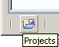
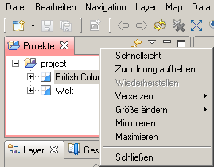
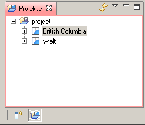

8 Mit Schnellsichten arbeiten
Mit Schnellsichten arbeiten
Schnellsichten - wohl besser als versteckte Fenster bezeichnet - können sehr schnell sichtbar gemacht werden. Es handelt sich dabei um ganz normale Fenster, allerdings mit der Eigenschaft, daß diese nahezu keinen Platz auf der Arbeitsfläche benötigen, wenn sie versteckt sind.
Schnellsicht-Fenster erzeugen
Die folgende Anleitung zeigt, wie das Projektfenster in eine Schnellansicht umgewandelt werden kann und wie diesen dann angezeigt werden kann. Es gbt zwei Möglichkeiten, eine Schnellsicht zu erzeugen:
- Mittels Drag und Drop und
- mittels einem Menüeintrag aus dem Systemmenü des Fensters.
Unter Einsatz von Drag und Drop geht dies wie folgt:
- Klicken Sie im Projektfenster auf die Titelleiste und ziehen Sie diese auf die Direktaufrufleiste, die in der Regel unten links auf der Arbeitsfläche zu finden ist.
- Sobald sich die Titelleiste über der Direktaufrufleiste befindet, ändert sich der Cursor in einen Schnellsicht-Cursor. Lassen Sie die Maustaste los, um das Projektfenster an die Direktaufrufleiste zu übergeben.<br/>
Die Direktaufrufleiste enthält jetzt eine Schaltfläche für die Schnellsicht "Projekte":

Um unter Verwendung der zweiten Methode eine Schnellsicht zu erstellen, beginnen Sie, indem Sie das Kontextmenü auf dem Reiter des Projektfensters aufklappen. In diesem Menü wählen Sie Schnellsicht.

Mit Schnellsichten arbeiten
Das Projektfenster ist nun in eine Schnellsicht umgewandelt worden. In diesem Abschnitt erfahren Sie, was Sie damit machen können.
- Vergewissern Sie sich, daß das Projektfenster immer noch in der Direktaufrufleiste links außen angezeigt wird und daß die Direktaufrufleiste in etwa so aussieht:
- Klicken Sie in der Direktaufrufleiste auf die Schaltfläche für die Schnellsicht "Projekte".
- Sie können beobachten, daß das Projektfenster jetzt aus der linken Seite des Fensters herausgleitet.

- Die Schnellsicht "Projekte" können Sie genauso wie das entsprechende herkömmliche Fenster verwenden. Um die Größe einer Schnellsicht zu ändern, ziehen Sie die Maus an den rechten Rand der Schnellsicht, wo sich der Cursor zu einem doppelten Pfeil verändert. Dann halten Sie beim Verschieben der Maus die linke Maustaste gedrückt.
- Um die Schnellsicht wieder zu verstecken, müssen Sie lediglich auf ein anderes Fenster, einen Editor oder die Schaltfläche Minimieren in der Symbolleiste der Schnellsicht klicken.
Hinweis: Wenn Sie in der Schnellsicht "Projekte" eine Karte oder Druckseite öffnen, minimiert sich die Schnellsicht automatisch selbst, damit Sie mit der Datei arbeiten können.
Mit einer der folgenden Aktionen können Sie eine Schnellsicht wieder in ein normales Fenster umwandeln:
- Wählen Sie im Kontextmenü des Symbols in der linken oberen Ecke der Schnellsicht den Befehl Schnellsicht aus.
- Ziehen Sie das Symbol für die Schnellsicht aus der Menüleiste an eine andere Stelle der Arbeitsfläche.
Weiter im Tutorial: 9 Den Arbeitsplatz verlassen
(c) Copyright (c) 2004-2008 Refractions Research Inc. and others.